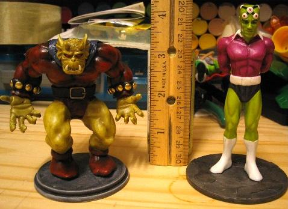
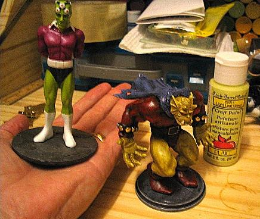
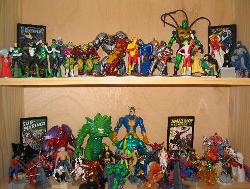

Here is a quick preview of my foray into 4" scale figures. Thus far (as of June 2006), I have only completed 2 figures - Etrigan and Brainiac. I am primarily using the DC Direct 4" pvc, Japanese Gashapon, and other similar figures as bases. So far, I'm pretty psyched about the possibilities.
|  |
|  |
| I also included a photo showing a sampling of the types of figures that are available in this scale, plus some other larger figures that fit in due to the size of the character. Click on the image to see a larger picture. |
|  |